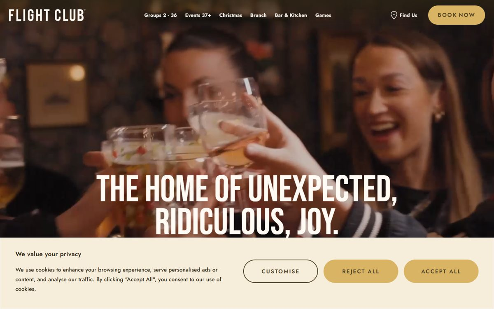

1
flightclubdarts.com
Бар с дартсом, Англия. Праздники и группы под ключТёмный главный экран: живое фото на всю ширину, крупный узкий капс поверх, кнопка «забронировать» золотой капсулой. Дальше светлые кремовые блоки: фото со смещённой карточкой «Группы 2-36», «Группы 37+». У нас это детский ДР, класс, корпоратив, вечерняя игра